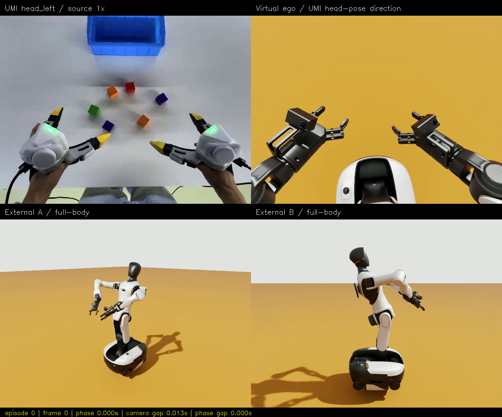
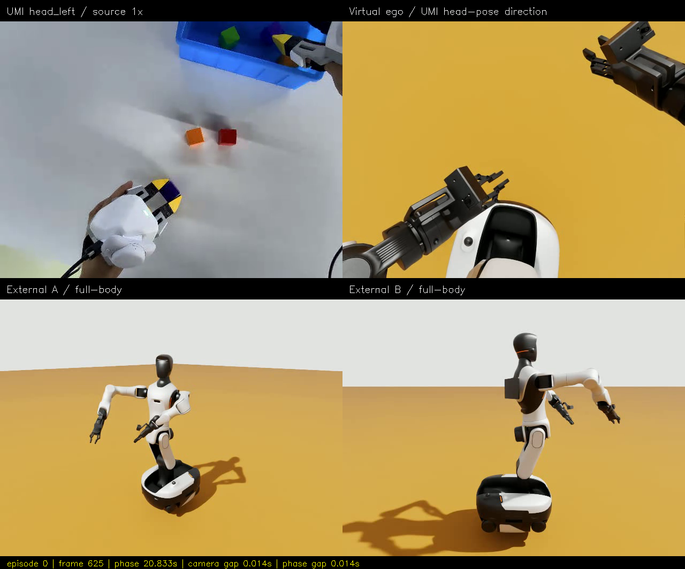
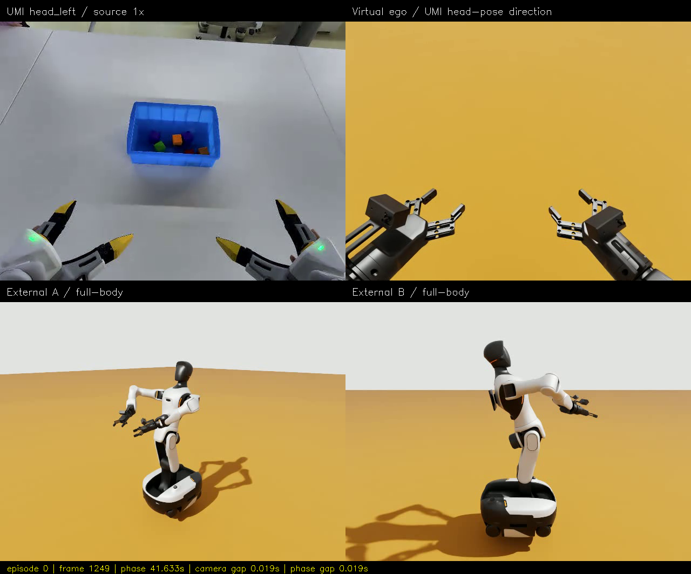
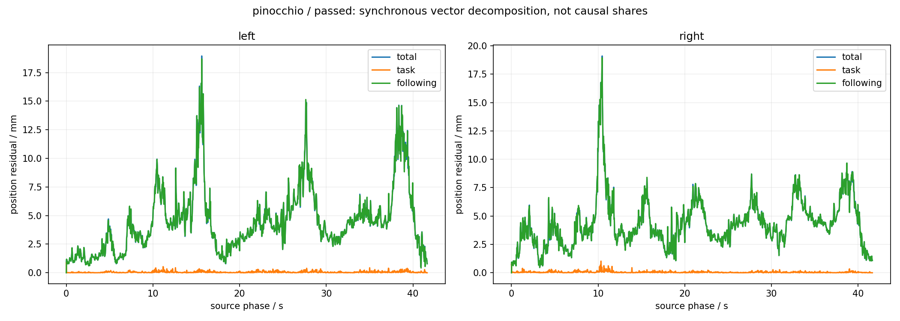

Episode 000 v6 · Pinocchio 在线回放
完整实验与失败记录 · 固定首帧 A/B · 指标 · 真实执行报告 · SHA256
Pinocchio 4.1.0 模型＋原有联合 QP，固定底盘、指尖 EEF、两夹爪开合。1250 条在线命令、零超时，实际 41.669305 s。仅证明这一段运行；批测中仍发现制动可行域和超时 HOLD 的名义加速度问题，未宣称已经全部修复。
1× 四分屏真视频
左上：源 UMI head_left；右上：方向对齐虚拟第一视角；下方：两个外部镜头。导出 30 fps / 1250 帧 / 41.666667 s；最大源相位差 27.528 ms，小于原有 100 ms 门槛。
首 / 中 / 末帧



同步位置误差分解

following 相对最后发布命令计算，不是驱动确认或因果误差占比。模型一致性不等于机器人定位精度，任务/伺服范数不能直接相加。
这是单独 Web 录制，不混入无 Web 负载的 A/B 耗时比较；没有新验证鼠标拖动/按钮，也没有块箱接触成功验收。在线服务当前使用 http://127.0.0.1:8780，静态页面本身不控制机器人。